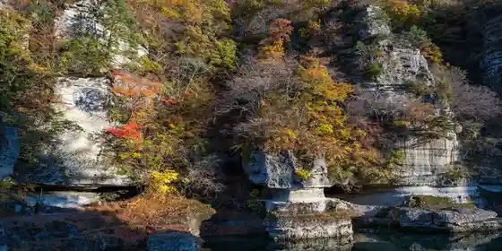
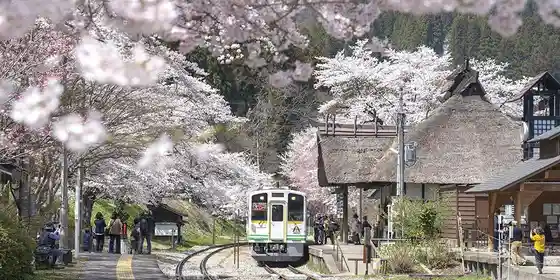
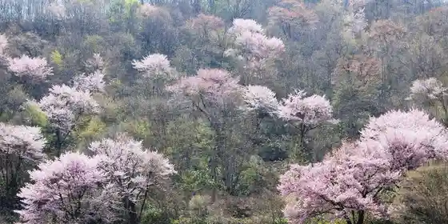

Roadside Station Shimogo
Shimogo, Fukushima · 0241-67-3802 · Official / source link
to no Hetsuri
Shimogo, Fukushima · 0241-69-1144 · Official / source link

Enraku Daichi no Soba Hatake
Shimogo, Fukushima · 0241-69-1144 · Official / source link
Yunokami Onsen'eki
Shimogo, Fukushima · 0241-68-2920 · Official / source link

Ko Aka no Yamazakura
Shimogo, Fukushima · 0241-68-2920 · Official / source link

Kagamiganuma
Shimogo, Fukushima · 0241-69-1144 · Official / source link
Higurashi Falls
Shimogo, Fukushima · 0241-69-1144 · Official / source link
Ochi Dam
Shimogo, Fukushima · 0241-69-1144 · Official / source link
Okawa Line
Shimogo, Fukushima · 0241-69-1144 · Official / source link
Okawa Dam
Shimogo, Fukushima · 0242-92-2839 · Official / source link
Onokawa Gorge
Shimogo, Fukushima · 0241-69-1144 · Official / source link
Ochi Yado Streetscape Tenjikan
Shimogo, Fukushima · 0241-68-2657 · Official / source link
Okawa Damu Nishi Park
Shimogo, Fukushima · 0241-69-1144 · Official / source link
Shimogo Yoson Koen Ikoi no Plaza
Shimogo, Fukushima · 0241-67-2202 · Official / source link
Tsuru Numakawa Gorge
Shimogo, Fukushima · 0241-69-1144 · Official / source link
Otoge
Shimogo, Fukushima · 0241-69-1144 · Official / source link
Kannon Numa Forest Park
Shimogo, Fukushima · 0241-68-2920 · Official / source link
Yunokami Onsen
Shimogo, Fukushima · 0241-68-2920 · Official / source link
Kannon Kawa Gorge
Shimogo, Fukushima · 0241-69-1144 · Official / source link
Ono Gaku
Shimogo, Fukushima · 0241-69-1144 · Official / source link
Shimogo Bussan Kan
Shimogo, Fukushima · 0241-67-4433 · Official / source link
Man Gan Tera
Shimogo, Fukushima · 0241-69-1166 · Official / source link
Nakayama Kazana Chi Tokushu Shokubutsu Gunraku
Shimogo, Fukushima · 0241-69-1144 · Official / source link
Nakayama no Oga Yaki
Shimogo, Fukushima · 0241-69-1166 · Official / source link
Ochi Yado
Shimogo, Fukushima · 0241-68-3611 · Official / source link
Okawa Hatori Prefectural Nature Park
Shimogo, Fukushima · 024-521-7251 · Official / source link
Ono Kannon Do
Shimogo, Fukushima · 0241-69-1144 · Official / source link
Takakura Shrine no Dai Sugi
Shimogo, Fukushima · 0241-69-1144 · Official / source link
Go Rei Shrine no Dai Karamatsu
Shimogo, Fukushima · 0241-69-1144 · Official / source link
Gaku Kannon Do
Shimogo, Fukushima · 0241-69-1144 · Official / source link
Enpuku Tera no Oga Yaki
Shimogo, Fukushima · 0241-69-1188 · Official / source link
Asahi Ta Jichu no Sawa Kannon Do
Shimogo, Fukushima · 0241-69-1144 · Official / source link